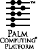

Palm OS® SDK
Documentation
CONTRIBUTORS
Written by Christopher Bey, Elly Freeman, and Jean Ostrem
Production by dotPS document production services
Engineering contributions by David Fedor, Roger Flores, Steve Lemke, Bob Ebert, Ken Krugler, Bruce Thompson, Jesse Donaldson, Tim Wiegman, Gavin Peacock,
Ryan Robertson, and Waddah Kudaimi
Copyright © 1996 - 2000, Palm, Inc. All rights reserved. This documentation may be printed and copied solely for use in developing products for Palm OS software. In addition, two (2) copies of this documentation may be made for archival and backup purposes. Except for the foregoing, no part of this documentation may be reproduced or transmitted in any form or by any means or used to make any derivative work (such as translation, transformation or adaptation) without express written consent from Palm, Inc.
Palm, Inc. reserves the right to revise this documentation and to make changes in content from time to time without obligation on the part of Palm, Inc. to provide notification of such revision or changes. PALM, INC. MAKES NO REPRESENTATIONS OR WARRANTIES THAT THE DOCUMENTATION IS FREE OF ERRORS OR THAT THE DOCUMENTATION IS SUITABLE FOR YOUR USE. THE DOCUMENTATION IS PROVIDED ON AN „AS IS‰ BASIS. PALM, INC. MAKES NO WARRANTIES, TERMS OR CONDITIONS, EXPRESS OR IMPLIED, EITHER IN FACT OR BY OPERATION OF LAW, STATUTORY OR OTHERWISE, INCLUDING WARRANTIES, TERMS, OR CONDITIONS OF MERCHANTABILITY, FITNESS FOR A PARTICULAR PURPOSE, AND SATISFACTORY QUALITY.
TO THE FULL EXTENT ALLOWED BY LAW, PALM,INC. ALSO EXCLUDES FOR ITSELF AND ITS SUPPLIERS ANY LIABILITY, WHETHER BASED IN CONTRACT OR TORT (INCLUDING NEGLIGENCE), FOR DIRECT, INCIDENTAL, CONSEQUENTIAL, INDIRECT, SPECIAL, OR PUNITIVE DAMAGES OF ANY KIND, OR FOR LOSS OF REVENUE OR PROFITS, LOSS OF BUSINESS, LOSS OF INFORMATION OR DATA, OR OTHER FINANCIAL LOSS ARISING OUT OF OR IN CONNECTION WITH THIS DOCUMENTATION, EVEN IF PALM, INC. HAS BEEN ADVISED OF THE POSSIBILITY OF SUCH DAMAGES.
Palm Computing, Palm OS, Graffiti, HotSync, and Palm Modem are registered trademarks, and Palm III, Palm IIIe, Palm IIIx, Palm V, Palm Vx, Palm VII, Palm, More connected., Simply Palm, the Palm Computing platform logo, Palm III logo, Palm IIIx logo, Palm V logo, and HotSync logo are trademarks of Palm, Inc. or its subsidiaries. All other product and brand names may be trademarks or registered trademarks of their respective owners.
IF THIS DOCUMENTATION IS PROVIDED ON A COMPACT DISK, THE OTHER SOFTWARE AND DOCUMENTATION ON THE COMPACT DISK ARE SUBJECT TO THE LICENSE AGREEMENT ACCOMPANYING THE COMPACT DISK.